Учиться водить.
Видеть прогресс.
Учебный автомобиль, проект района и интерактивный интерфейс автошколы. Одна точка входа для проверки формы, сценариев и качества.
Открыть прототип →Осмотреть 3D-модель ↗Рабочие материалы. Рендеры и HTML-прототип не являются записью работающего симулятора.
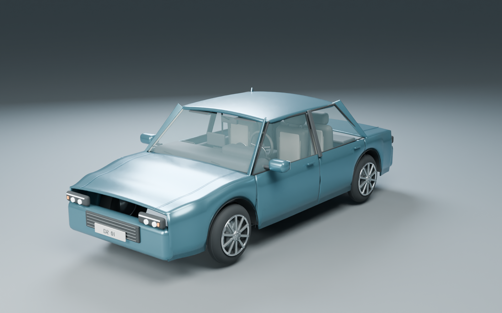
Габариты снаружи.
Пространство внутри.
Реальные рендеры геометрии DS Sedan A.
Осмотрите силуэт, посадку, обзор и педальный узел.
{kind=link}
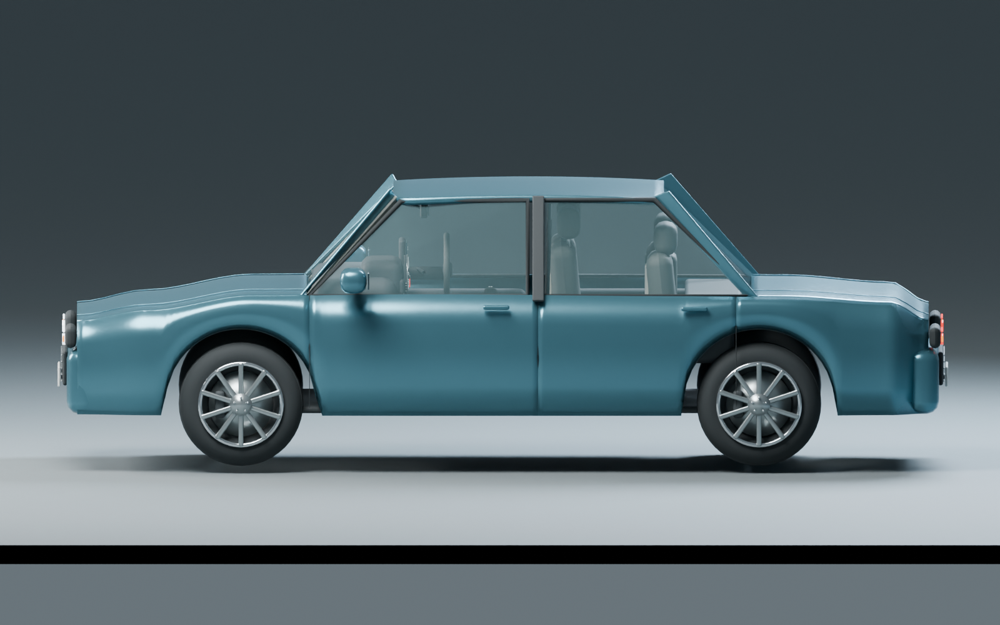
{kind=link}
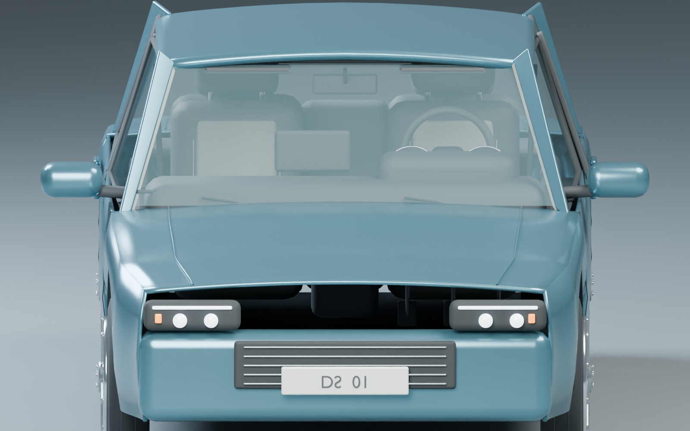
{kind=link}
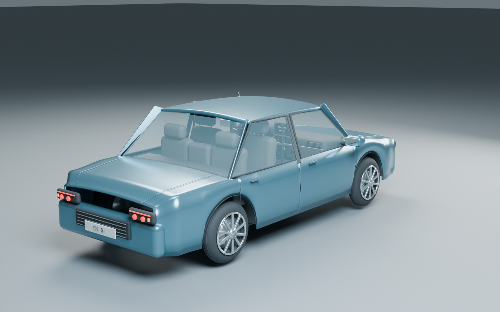
{kind=link}
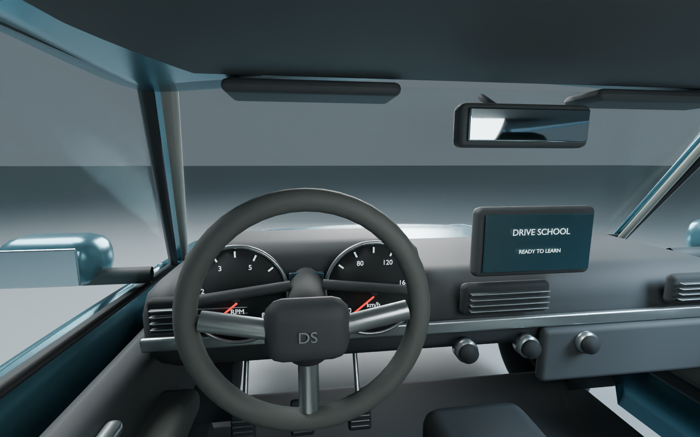
{kind=link}
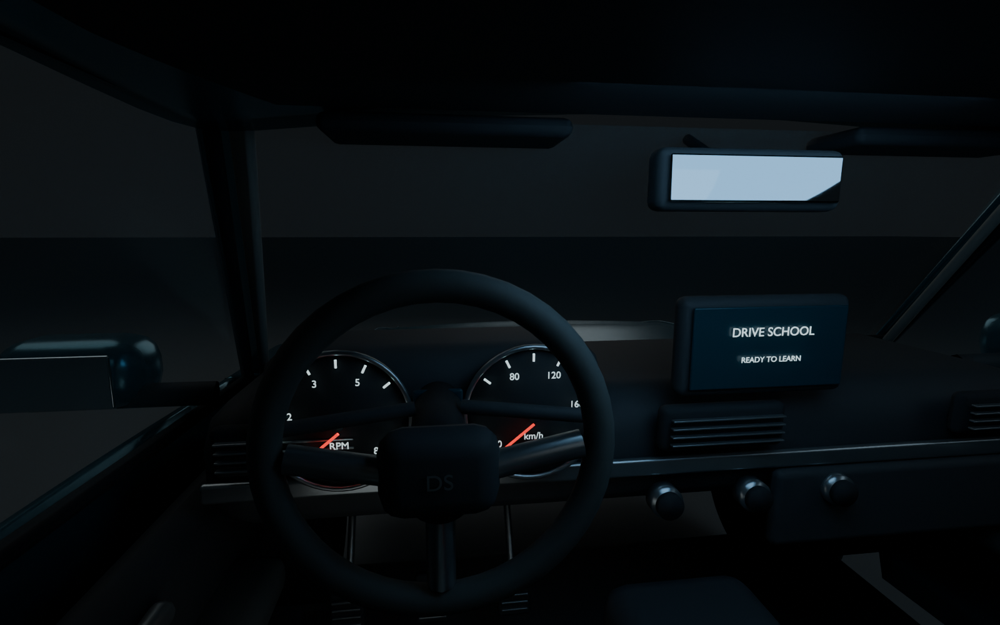
{kind=link}
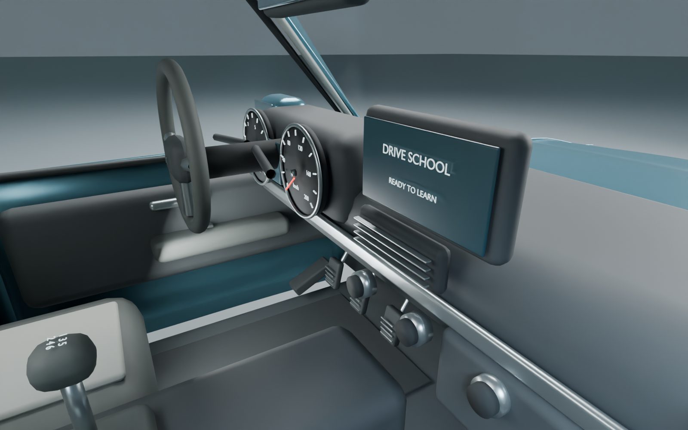
{kind=link}
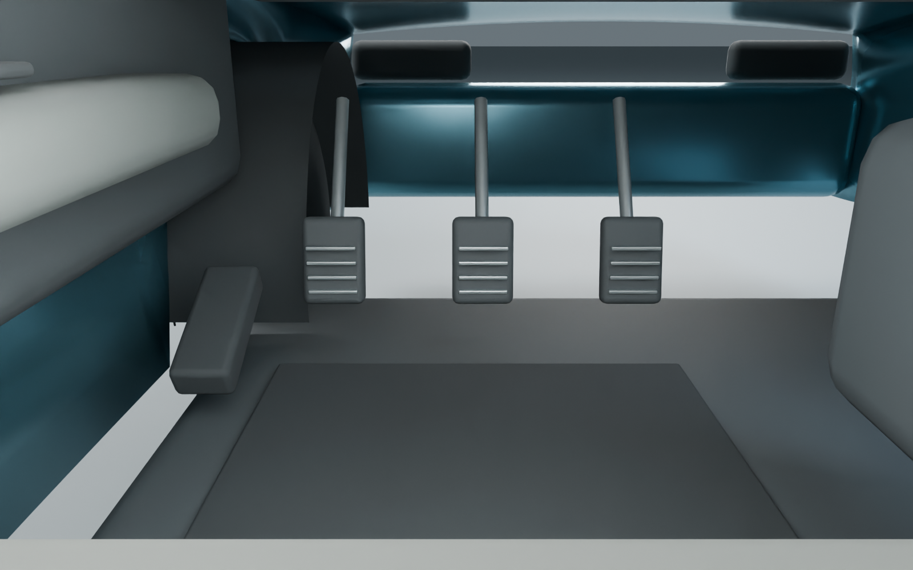
{kind=link}
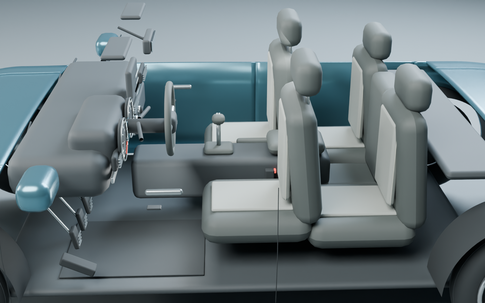
{kind=link}
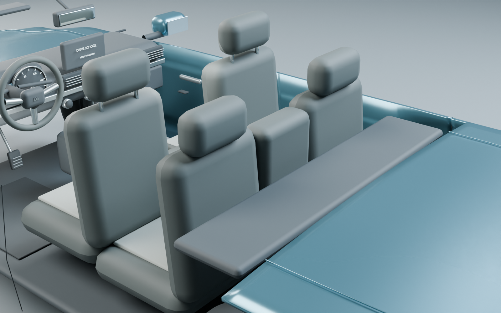
От площадки к городу.
Генплан 10 × 10 км — проект структуры мира.
Наличие плана не означает, что весь город построен.
Зоны, маршруты и упражнения оцениваются по отдельным артефактам. Игровая проезжаемость, трафик и физика требуют проверки в Unity.
Спокойный ритм обучения.
Девять связанных экранов: от выбора занятия до разбора поездки. Графитовая основа, ясная типографика и золотой акцент помогают удерживать внимание на следующем действии.
До и после · вид из салона
Сравниваются реальные рендеры двух версий модели. Историческая v1 приведена только как исходная точка.
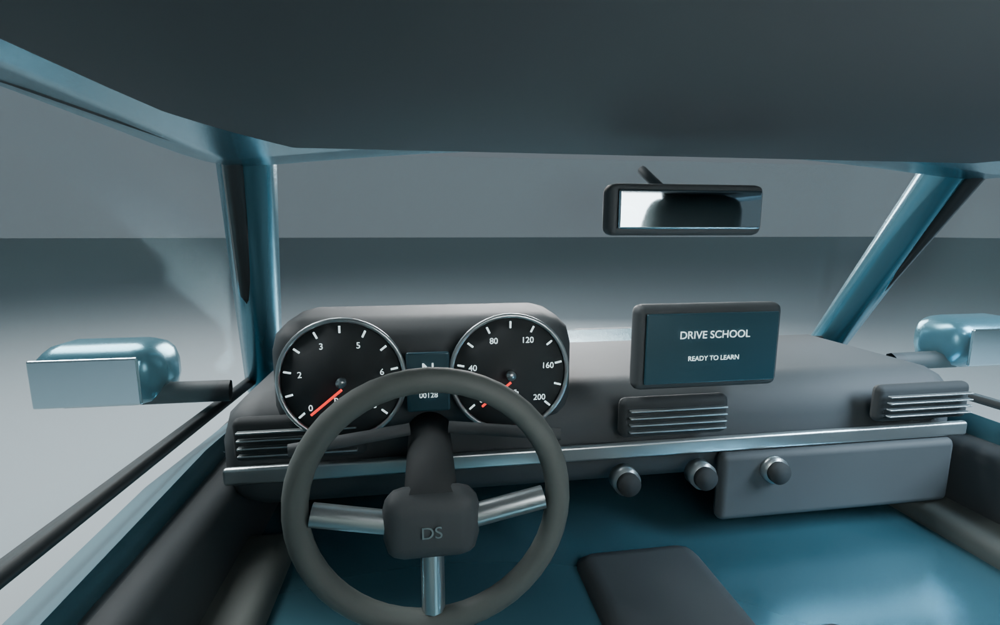
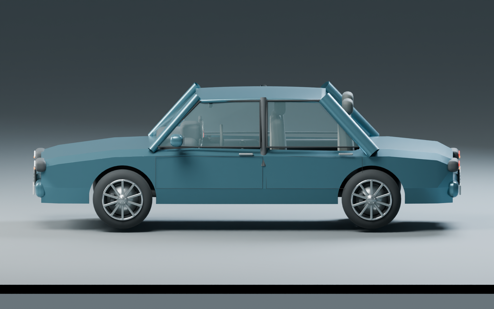
Что проверено — и где граница.
Результаты проверки загружаются из локального отчёта.